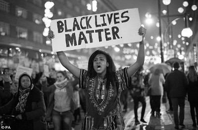

Black Lives Matter er en organisasjon for afrikanske-amerikanske, som demonstrerer mot vold og rasisme mot afro-amerikanske, blant annet politivold. Bevegelsen startet 13 juli, 2013 i forbindelse med at Travyon ble skutt og drept av politiet. Men organisasjonen fikk først mye oppmerksomhet når en afrikansk-amerikansk ungdom, som het Miachel Brown ble skutt og drept uten å holde noe våpen. Organisasjonens største plattform er Twitter, og via emneknaggen Blacklivesmatter. I denne oppgaven vil vi derfor diskutere og drøfte hvordan organisasjonen har spredt informasjon og hvordan de bruker sosiale medier for å fremme budskapet sitt. Før når noe skjedde i verden, kunne man bruke flere dager, eller flere uker på at nyhetene skulle bli skrevet om i avisa og nå ut til hele verden. I dagens samfunn tar det bare et par sekunder før et bilde er lastet opp og delt på Twitter, eller en video er delt på Facebook. Denne nye måten å spre informasjon har Black Lives matter valgt å bruke, blant annet med hastagger, nettsider og kjendiser. 